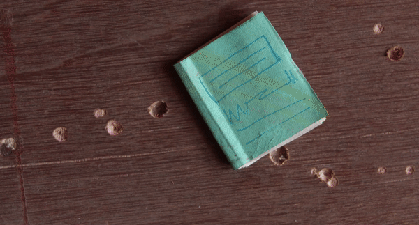
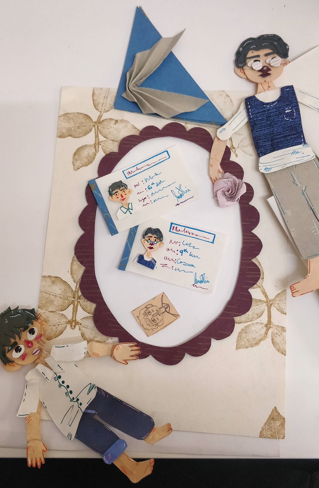
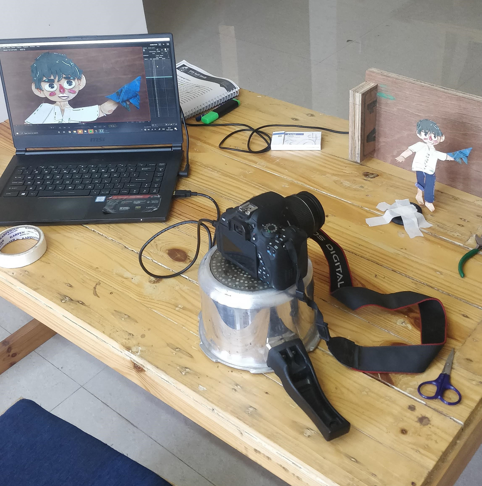
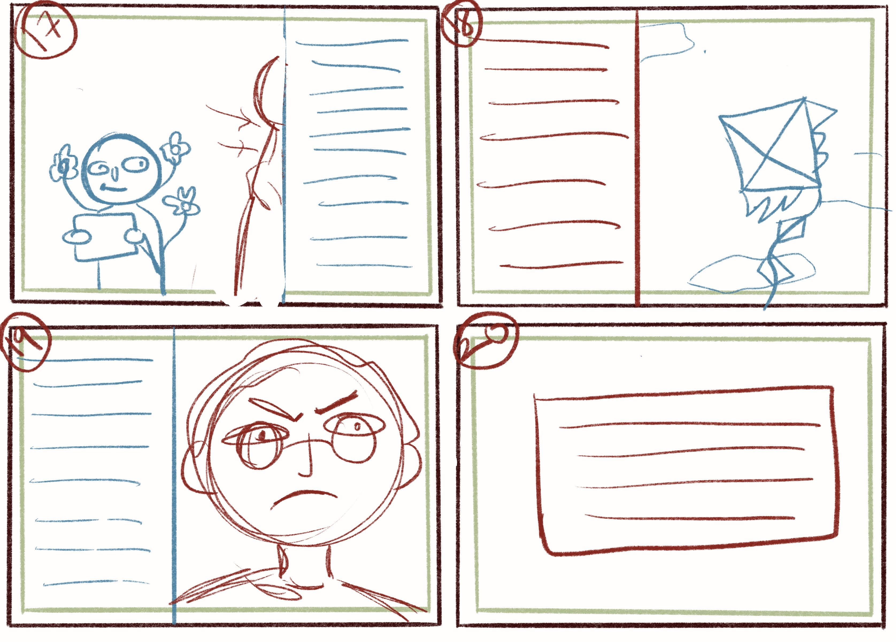
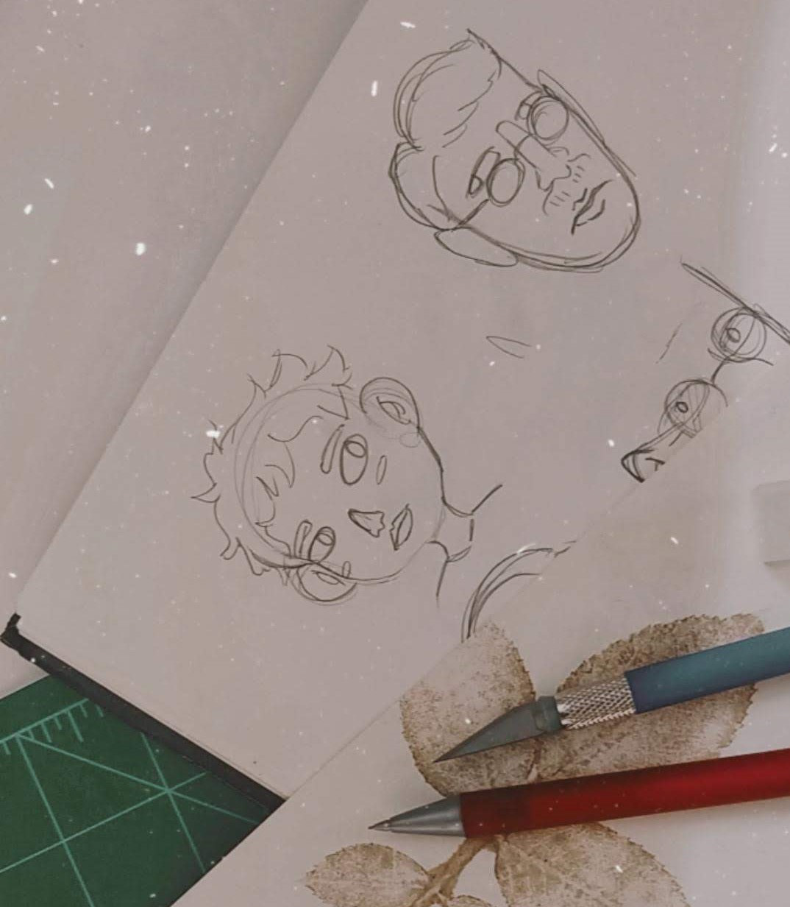
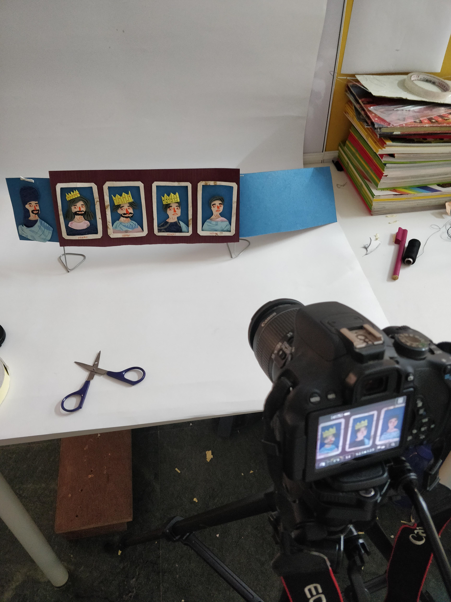

My Older Brother

The brief
My Older Brother is an animated GIF book adapted from Munshi Premchand’s short story My Elder Brother. It follows two brothers and the weight of academic expectation, the elder repeatedly failing his exams while lecturing the younger, who keeps passing without trying. It’s a story about rivalry, love, and an education system that measures the wrong things.
The approach
This was made at home, during COVID, from a small setup squeezed into whatever room had the right light. The constraint shaped the work: no studio, no big rig, just a tablet and a corner. I leaned into a workflow I could run alone, end to end, illustrate the spread, then add the small looping motion that brings it to life.



The work
Two things to show: how the pages were made, and how they came out.
The whole book was built at home during lockdown, on a setup that moved around the house chasing daylight.






Credits
Made with
StoryWeaver · Pratham Books
Tools
Procreate
DragonFrame
Format
Animated GIF book
Made at home during COVID, 2020